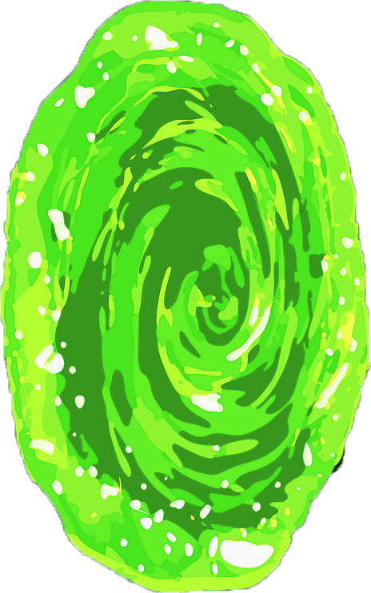

<nav class="navbar navbar-expand-lg navbar-dark bg-dark">
  <div class="container-fluid">
    <a class="navbar-brand " href="/">
      
      Home
    </a>
    <button class="navbar-toggler" type="button" data-bs-toggle="collapse" data-bs-target="#navbarNav"
      aria-controls="navbarNav" aria-expanded="false" aria-label="Toggle navigation">
      <span class="navbar-toggler-icon"></span>
    </button>
    <div class="collapse navbar-collapse" id="navbarNav">
      <ul class="navbar-nav">
        @for (item of links; track item.id) {
        <li class="nav-item" style="cursor: pointer;" (click)="selectItem(item.id)">
          @if(item.active){
            <a class="nav-link active" aria-current="page" [href]="item.path" >{{item.name}}</a>
          } @else {
            <a class="nav-link" aria-current="page" [href]="item.path" >{{item.name}}</a>
          }
        </li>
        }
      </ul>
    </div>
  </div>
</nav>